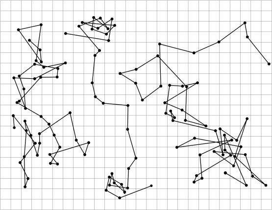

FEX1001 · Aula 1
Medidas e algarismos significativos
Como ler um instrumento, como escrever o resultado e quanto se pode confiar nele.
Prof. Rafael de Lima · Departamento de Física · CCT/UDESC
O caminho de hoje
Roteiro
- Por que medir — grandezas e unidades
- Algarismos significativos
- Conversão de unidades e notação científica
- Operações com algarismos significativos
- Critérios de arredondamento
- Classificação dos erros
- Tratamento estatístico de séries de medidas
- Erro relativo percentual
- Propagação de erros
- Exercícios
Uma medida não é um número: é um número, uma unidade e uma incerteza. Perder qualquer um dos três é perder a medida.
Parte 1
Por que medir
Grandezas, unidades e o que de fato acontece quando comparamos algo com um padrão.
A Física é uma ciência experimental
- Todo conhecimento físico — leis, princípios, modelos — vem de medidas, das partículas elementares às galáxias.
- Saber medir envolve:
- manusear os instrumentos;
- expressar corretamente a informação extraída deles;
- operar matematicamente sem inventar precisão;
- informar o quanto se pode confiar no resultado.
Se toda medida tem erro, então a Física não é uma ciência tão exata assim. É exatamente por isso que precisamos ser cuidadosos com o tratamento dos erros.
Método científico, na prática
- Observação do fenômeno;
- Formulação de hipóteses explicativas;
- Teste das hipóteses através de experimentos;
- Elaboração de uma teoria sobre o fenômeno estudado.
É na fase da experimentação que entram as medidas das grandezas físicas relacionadas ao fenômeno em estudo.
Grandezas físicas
Quantidades que podem ser medidas: massa, comprimento, velocidade, força, temperatura…
As fundamentais são independentes entre si e formam um sistema — o SI. As derivadas se escrevem a partir delas.
Exemplo: comprimento e tempo são fundamentais; velocidade (\(\mathrm{m/s}\)) é derivada.
As sete unidades fundamentais do SI

Medir é comparar
Medir uma grandeza significa compará-la com outra da mesma espécie, definida como unidade, para verificar a relação numérica entre elas.
Sendo \(G\) a quantidade da grandeza e \(U\) a unidade convencionada, o valor numérico \(M(G)\) é a razão
$$ M(G)=\frac{G}{U} \qquad\Longrightarrow\qquad G = M(G)\,U. $$Toda medida de grandeza física apresenta unidade.
Exemplo 1 — uma massa em uma balança
Adotamos \(U = 1\ \mathrm{grama}\). A medição de uma certa massa \(m = G\), comparando-a com essa unidade, fornece \(M(G) = G/U = 101{,}25\).
O número \(101{,}25\) só ganha sentido físico acompanhado do grama. Sozinho, não é uma medida.
Toda medida traz um erro provável
Os erros têm origens variadas, e a informação sobre eles obrigatoriamente faz parte do resultado:
$$ G = \bigl(M(G) \pm \Delta M\bigr)\,U. $$- O sinal \(\pm\) indica que o erro provável tanto pode aumentar quanto diminuir o valor medido.
- A medida mais provável está na região \(\bigl[(M(G)-\Delta M)\,;\,(M(G)+\Delta M)\bigr]\,U\).
Exemplo 2 — a mesma massa, agora com incerteza
Na medição do Exemplo 1, o erro provável foi de \(0{,}04\ \mathrm{g}\).
Ou seja: a massa está entre 101,21 g e 101,29 g, dadas as condições em que a medição foi realizada.
Múltiplos e submúltiplos
As unidades são apresentadas em múltiplos e submúltiplos conforme a escala da grandeza:
- dimensões atômicas → angstroms (\(10^{-10}\ \mathrm{m}\));
- dimensões terrestres → quilômetros (\(10^{3}\ \mathrm{m}\));
- distâncias entre estrelas → ano-luz ou parsec.
Escolha o instrumento — e a unidade — coerentes com o “tamanho” da grandeza observada.
Parte 2
Algarismos significativos
O que a escrita de um número já conta sobre o instrumento que a produziu.
Medida direta e medida indireta
O valor desconhecido é comparado diretamente com o padrão. Ex.: a largura de uma parede, \(L_x = 4{,}3\ \mathrm{m}\).
Obtida por operações matemáticas com medidas diretas. Ex.: com \(H_x = 2{,}6\ \mathrm{m}\),
\(\text{área} = L_x H_x = 4{,}3\ \mathrm{m} \times 2{,}6\ \mathrm{m} = 11{,}18\ \mathrm{m^2} = 11\ \mathrm{m^2}.\)
\(L_x\) e \(H_x\) têm erro individualmente — logo a área também tem. Esse erro propagado é o assunto da parte final da aula.
O que são algarismos significativos
São todos os algarismos dos quais se tem plena certeza, mais um duvidoso — o último, estimado a olho.
- O algarismo duvidoso é significativo.
- Qualquer algarismo à direita do duvidoso não é significativo e não deve aparecer no resultado.
- O duvidoso é um indicativo da escala do instrumento.
Nesta apresentação, o algarismo duvidoso aparece assim: 11,3 cm
Exemplo 3 — a mesma tira de papel, três réguas

Exemplo 3 — as leituras corretas
| Instrumento | Leitura de L | Alg. significativos |
|---|---|---|
| régua decimetrada | 1,1 dm | 2 |
| régua centimetrada | 11,3 cm | 3 |
| régua milimetrada | 113,4 mm | 4 |
A extremidade do objeto cai entre dois traços. O experimentador divide mentalmente esse intervalo em décimos e supõe a olho o último dígito.
1,2 dm, 11,4 cm, 113,3 mm também seriam aceitáveis: o último algarismo depende do olho de quem mede.
E se a extremidade coincidir com um traço?
Fica ainda mais fácil: o algarismo duvidoso é simplesmente o zero.
1,0 dm · 10,0 cm · 100,0 mm
Calculadoras descartam zeros à direita da vírgula, por economia. Esses zeros, porém, são imprescindíveis e precisam ser escritos.
Zeros: quando contam?
Todos os algarismos de uma medida são significativos, exceto os zeros à esquerda do primeiro algarismo significativo — eles apenas fixam a posição da vírgula.
Não significativos
0,00…187 km → os três zeros só ancoram a vírgula.
Significativos
100,0 mm → o zero final é o duvidoso, logo conta.
Precisão do instrumento
- A precisão do instrumento determina quantos algarismos significativos se consegue obter.
- Das três réguas, a milimetrada é a mais precisa: forneceu 4 algarismos.
- Para obter mais, é preciso um instrumento melhor — um paquímetro com escala em décimos de milímetro, por exemplo.
Com a régua decimetrada, jamais se pode escrever 1,15 dm: a escala só permite certeza na casa dos decímetros, e o algarismo dos centímetros já é o duvidoso.
A escrita denuncia a escala
Quando alguém escreve 11,3 cm, está dizendo que usou uma régua centimetrada — porque o duvidoso está na primeira casa decimal.
“Mas isso é óbvio pela unidade!” Então mudemos a unidade:
$$ 11{,}3\ \mathrm{cm} = 0{,}113\ \mathrm{m} $$A escala passou a ser o metro? Não. O duvidoso — 0,113 m — continua na mesma posição física: a casa dos décimos de centímetro.
A mudança de unidade não pode alterar a quantidade de algarismos significativos — isso seria adulterar a medida.
“Mas apareceu um algarismo a mais!”
Alguém pode objetar: eram três (11,3 cm) e passaram a ser quatro (0,113 m).
Não. O zero à esquerda dos demais não é significativo; seu papel é ancorar a vírgula depois da mudança de unidade.
100,0 mm tem quatro algarismos significativos. Em metros, precisa continuar com quatro:
\(100{,}0\ \mathrm{mm} = 0{,}1000\ \mathrm{m}\) — e não 0,1 m.
Quantos algarismos significativos há aqui?
| Medida | Alg. sign. | Medida | Alg. sign. |
|---|---|---|---|
| \(7\times 10\ \mathrm{km}\) | um | \(0{,}0001540\ \mathrm{K^{-1}}\) | quatro |
| \(0{,}000005\ \Omega\) | um | \(35{,}40\ \mathrm{g}\) | quatro |
| \(0{,}0013\ \mathrm{A}\) | dois | \(9{,}8067\ \mathrm{m/s^2}\) | cinco |
| \(66\times 10^{11}\ \mathrm{anos}\) | dois | \(1{,}9764\times10^{-23}\ \mathrm{átomos}\) | cinco |
| \(0{,}0450\ \mathrm{mm}\) | três | \(15000\ \mathrm{s}\) | cinco |
| \(2{,}31\times10^{-1}\ \mathrm{cal/J}\) | três | \(4{,}00000\times10^{-3}\ \mathrm{eV/C}\) | seis |
Conte da esquerda para a direita, começando no primeiro algarismo diferente de zero.
Parte 3
Conversão de unidades e notação científica
Como trocar de unidade sem alterar a informação que o instrumento forneceu.
Prefixos do SI
| Fator | Prefixo | Símbolo |
|---|---|---|
| \(10^{24}\) | iota | Y |
| \(10^{21}\) | zeta | Z |
| \(10^{18}\) | exa | E |
| \(10^{15}\) | peta | P |
| \(10^{12}\) | tera | T |
| \(10^{9}\) | giga | G |
| \(10^{6}\) | mega | M |
| \(10^{3}\) | quilo | k |
| \(10^{2}\) | hecto | h |
| \(10^{1}\) | deca | da |
| Fator | Prefixo | Símbolo |
|---|---|---|
| \(10^{-1}\) | deci | d |
| \(10^{-2}\) | centi | c |
| \(10^{-3}\) | mili | m |
| \(10^{-6}\) | micro | μ |
| \(10^{-9}\) | nano | n |
| \(10^{-12}\) | pico | p |
| \(10^{-15}\) | femto | f |
| \(10^{-18}\) | ato | a |
| \(10^{-21}\) | zepto | z |
| \(10^{-24}\) | iocto | y |
Prefixos — a tabela da apostila

Convertendo para unidades maiores
Um fio de linha medido com as três réguas:
| Instrumento | Comprimento \(l_f\) | A. S. |
|---|---|---|
| decimetrada | 18,7 dm = 1,87 m = 0,187 dam = 0,0187 hm = 0,00187 km | 3 |
| centimetrada | 186,6 cm = 1,866 m = 0,1866 dam = 0,01866 hm = 0,001866 km | 4 |
| milimetrada | 1865,4 mm = 1,8654 m = 0,18654 dam = 0,018654 hm = 0,0018654 km | 5 |
Os zeros que surgem à esquerda não são significativos: apenas fixam a posição da vírgula. A quantidade de algarismos não muda em nenhuma linha.
Convertendo para unidades menores
Aqui mora a armadilha. Queremos escrever 18,7 dm em milímetros.
\(18{,}7\ \mathrm{dm} = 1870\ \mathrm{mm}\) — isso transforma três algarismos significativos em quatro, como se a medida tivesse sido feita com uma régua centimetrada. É falso.
\(18{,}7\ \mathrm{dm} = 18\underline{7}\times 10\ \mathrm{mm}\)
Para converter a uma unidade menor, multiplique por uma potência de 10 — nunca acrescente zeros à direita.
Convertendo para unidades menores — a tabela completa
| Instrumento | Comprimento \(l_f\) | A. S. |
|---|---|---|
| decimetrada | 18,7 dm = 187 cm = 187×10 mm = 187×10⁴ μm = 187×10⁷ nm = 187×10⁸ Å | 3 |
| centimetrada | 186,6 cm = 1866 mm = 1866×10³ μm = 1866×10⁶ nm = 1866×10⁷ Å | 4 |
| milimetrada | 1865,4 mm = 18654×10² μm = 18654×10⁵ nm = 18654×10⁶ Å | 5 |
1 Å = 10⁻¹⁰ m.
Notação científica
Considere: 30 dm, 300 cm e 3000 mm. Mesma dimensão, três medidas diferentes — dois, três e quatro algarismos significativos.
Um único algarismo significativo antes da vírgula, o primeiro à esquerda, multiplicado por uma potência de dez:
O expoente \(n\) representa a ordem de grandeza da medida.
As três medidas, agora em micrometros
Em notação científica só aparecem os algarismos significativos. Os zeros de posicionamento simplesmente somem.
\(18{,}7\ \mathrm{dm} = 0{,}00187\ \mathrm{km} = 1{,}87\times10^{-3}\ \mathrm{km}\) — os três algarismos, e nada além deles.
Exemplos em notação científica
| Medida | Alg. significativos |
|---|---|
| \(4\ \mathrm{N/m^2} = 4\times10^{0}\ \mathrm{N/m^2}\) | um |
| \(0{,}0000013\ \mathrm{g} = 1{,}3\times10^{-6}\ \mathrm{g}\) | dois |
| \(760\ \mathrm{mm\text{-}Hg} = 7{,}60\times10^{2}\ \mathrm{mm\text{-}Hg}\) | três |
| \(0{,}003671\ \mathrm{K^{-1}} = 3{,}671\times10^{-3}\ \mathrm{K^{-1}}\) | quatro |
| \(980{,}66\ \mathrm{cm/s^2} = 9{,}8066\times10^{2}\ \mathrm{cm/s^2}\) | cinco |
| \(299776\ \mathrm{km/s} = 2{,}99776\times10^{5}\ \mathrm{km/s}\) | seis |
| \(5000000\ \mathrm{eV/C} = 5{,}000000\times10^{6}\ \mathrm{eV/C}\) | sete |
Conversões resolvidas — áreas e volumes
Em todos os casos, a quantidade de algarismos significativos é preservada.
Conversões resolvidas — unidades compostas
$$ 1{,}3\ \mathrm{km/h} = 1{,}3\,\frac{1\times10^{3}\ \mathrm{m}}{3600\ \mathrm{s}} = 0{,}36111\ldots\ \mathrm{m/s} = 3{,}6\times10^{-1}\ \mathrm{m/s} $$ $$ 148{,}0\ \frac{\mathrm{N}}{\mathrm{m^2}} = 148{,}0\ \frac{\mathrm{kg}}{\mathrm{m\cdot s^2}} = 148{,}0\ \frac{1\times10^{3}\ \mathrm{g}}{(1\times10^{2}\ \mathrm{cm})\,\mathrm{s^2}} = 1{,}480\times10^{3}\ \mathrm{g\,cm^{-1}s^{-2}} $$Repare que a unidade é operada exatamente como o número.
Conversões resolvidas — tempo
$$ 1{,}290\ \mathrm{s} = 1{,}290\left(\tfrac{1}{60}\right)\left(\tfrac{1}{60}\right) \left(\tfrac{1}{24}\right)\left(\tfrac{1}{365{,}25}\right)\ \mathrm{ano} = 4{,}088\times10^{-8}\ \mathrm{ano} $$ $$ 493{,}70\ \mathrm{anos} = 493{,}70 \times 365{,}25\ \mathrm{dias} \times \tfrac{24\,\mathrm{h}}{1\,\mathrm{dia}} \times \tfrac{60\,\mathrm{min}}{1\,\mathrm{h}} \times \tfrac{60\,\mathrm{s}}{1\,\mathrm{min}} = 1{,}5580\times10^{10}\ \mathrm{s} $$Os fatores de conversão (60, 24, 365,25) são números exatos: não limitam a quantidade de algarismos significativos do resultado.
Parte 4
Operações com algarismos significativos
Adição, subtração, multiplicação, divisão — e tudo o mais.
O princípio único
O resultado não pode ter precisão maior do que a da medida “mais pobre” que entrou na conta.
- Efetue a operação normalmente;
- arredonde apenas no final, conforme a regra da operação;
- apresente o resultado em notação científica, com unidade.
É natural precisar operar medidas feitas com instrumentos de precisões diferentes — é para isso que servem estas regras.
Exemplo 4 — somando tábuas
Com réguas decimetrada, centimetrada e milimetrada mediram-se os comprimentos de algumas tábuas. Qual é o comprimento total?
- 2355,1 mm
- 11,1 dm
- 117,3 cm
- 13,5 mm
- 3,4 dm
- 77,5 cm
- 813,3 mm
Primeiro passo: uma única unidade. A unidade de maior ordem é o dm, então convertemos para o dm ou para uma unidade superior — o metro.
Exemplo 4 — conversão para metros
O algarismo duvidoso viaja com a medida: mudar de unidade não o move de posição física.
Exemplo 4 — a soma
Onde um duvidoso participa da soma, o resultado naquela casa também é duvidoso. Mas o resultado só pode ter um duvidoso: o “menos duvidoso de todos”, o primeiro à esquerda — aqui, o 9 da segunda casa decimal.
Exemplo 4 — o arredondamento
Despreza-se tudo o que vem depois do 9. Como a parte desprezada está mais próxima de uma unidade acima, arredonda-se para cima.
6,58 m tem o duvidoso na casa dos centímetros — exatamente a posição do duvidoso da régua decimetrada, a menos precisa das três. A soma não pode ser mais precisa do que a pior parcela.
Exemplo 4 — por outro caminho
Escrevendo cada medida como parte certa + parte duvidosa:
A parte duvidosa acumulada (0,0589 m) já é da ordem dos centímetros. Não faz sentido reportar milímetros ou décimos de milímetro no total.
Regra da adição
O resultado da adição de várias medidas de uma mesma grandeza física não pode ter maior quantidade de algarismos significativos na sua parte decimal do que a parte decimal mais pobre das parcelas.
No Exemplo 4, a parcela mais pobre é 0,34 m — duas casas decimais. Logo o total tem duas casas decimais: 6,58 m.
Por que não converter para unidade menor
Se adotássemos o milímetro no Exemplo 4, seria preciso introduzir potências de 10:
As potências de 10 escondem a parte decimal mais pobre e a regra fica impossível de aplicar. Converta sempre para uma unidade de ordem superior.
Critérios de arredondamento
Arredonda-se no primeiro algarismo duvidoso à esquerda, desprezando o resto.
O duvidoso anterior é aumentado de uma unidade.
O duvidoso anterior não se altera.
Duvidoso anterior ímpar → aumenta.
Duvidoso anterior par (zero incluso) → permanece.
1º caso — parte desprezada maior que 5
| 1524,5500100 cm³ | → | 1524,6 cm³ = 1,5246×10³ cm³ |
| 12,12599875 g | → | 12,13 g = 1,213×10¹ g |
| 204,96501212 N | → | 205,0 N = 2,050×10² N |
| 0,00121521111 A | → | 0,00122 A = 1,22×10⁻³ A |
| 0,137298760 V | → | 0,14 V = 1,4×10⁻¹ V |
2º caso — parte desprezada menor que 5
| 699,05 mm-Hg | → | 699 mm-Hg = 6,99×10² mm-Hg |
| 80,032 cal/g | → | 80,0 cal/g = 8,00×10¹ cal/g |
| 27,24 g | → | 27,2 g = 2,72×10¹ g |
| 4,8205 dyn/cm² | → | 4,8 dyn/cm² = 4,8×10⁰ dyn/cm² |
| 0,5431 N/m | → | 0,54 N/m = 5,4×10⁻¹ N/m |
3º caso — parte desprezada exatamente 5
| 1,55500 Wb/m² | → | 1,56 Wb/m² | ímpar, aumenta |
| 0,00355 cal/g | → | 0,0036 cal/g = 3,6×10⁻³ cal/g | ímpar, aumenta |
| 129,500 g/s | → | 130 g/s = 1,30×10² g/s | ímpar, aumenta |
| 1,9500 dyn/cm² | → | 2,0 dyn/cm² | ímpar, aumenta |
| 0,805 N/m | → | 0,80 N/m = 8,0×10⁻¹ N/m | par, permanece |
| 25,105 mm-Hg | → | 25,10 mm-Hg = 2,510×10¹ mm-Hg | par, permanece |
| 26500 m | → | 2,6×10⁴ m | par, permanece |
| 28,500 J | → | 28 J = 2,8×10¹ J | par, permanece |
| 0,0004500 N·m | → | 0,0004 N·m = 4×10⁻⁴ N·m | par, permanece |
| 9,50000 C/g | → | 1×10¹ C/g | ímpar, aumenta |
A última linha é a mais instrutiva: 9 aumenta para 10, e o resultado muda de ordem de grandeza.
Adição — exemplos de aplicação
Embora a adição seja a mais simples das operações, é onde aparecem os erros mais inacreditáveis. Efetue normalmente e arredonde apenas o resultado.
A mesma soma, em três unidades
Três caminhos, o mesmo resultado. É assim que tem de ser: a unidade escolhida para fazer a conta não pode alterar a física.
Subtração
Do ponto de vista matemático, a subtração é idêntica à adição de números relativos — a regra é a mesma.
O resultado da subtração de várias medidas de uma mesma grandeza física não pode ter maior quantidade de algarismos significativos na sua parte decimal do que a parte decimal mais pobre das parcelas.
Exemplo 5 — cortando uma tábua
De uma tábua de 2859,0 mm são cortados pedaços de 12,3 dm, 113,7 cm e 63,5 mm. Qual é o comprimento final?
O primeiro duvidoso à esquerda é o 2. Despreza-se o 85 e arredonda-se: 0,43 m.
Exemplo 5 — leitura do resultado
O duvidoso do resultado, 0,43 m, está na casa dos centímetros — a mesma da régua decimetrada, a menos precisa das três usadas.
Assim como na adição, o total não pode ter precisão maior do que a fornecida pelo pior instrumento envolvido.
Contra-exemplo 6 — quando a regra deixa a desejar
De uma tábua de 1592,0 mm são cortados pedaços de 12,3 dm e 36,1 cm.
As conclusões sobre precisão ficam prejudicadas. Isso sempre ocorre quando os valores subtraídos são muito próximos: a subtração destrói algarismos significativos.
Subtração — exemplos de aplicação
Tanto na adição quanto na subtração, o arredondamento é executado após a operação, conforme a medida menos precisa.
Exemplo 7 — a área de um retângulo
Os lados \(a\) e \(b\) de um retângulo, medidos com as três réguas:
| Régua | Lado a | Lado b |
|---|---|---|
| decimetrada | 12,8 dm | 1,2 dm |
| centimetrada | 127,8 cm | 11,7 cm |
| milimetrada | 1279,1 mm | 117,4 mm |
Multiplicamos as medidas feitas com a mesma régua — assim não é preciso converter nada.
Exemplo 7 — as três áreas
| Régua | Área = a · b |
|---|---|
| decimetrada | 12,8 × 1,2 = 15,36 dm² = 15 dm² |
| centimetrada | 127,8 × 11,7 = 1495,26 cm² = 150×10¹ cm² |
| milimetrada | 1279,1 × 117,4 = 150166,34 mm² = 1502×10² mm² |
Repare: 2, 3 e 4 algarismos significativos — a quantidade do fator mais pobre em cada linha.
Exemplo 7 — por que 3 algarismos?
O “menos duvidoso de todos” é o 9. Tudo à direita dele é desprezado; como a parte desprezada é maior que 5, arredonda-se para cima.
Exemplo 7 — por certo + duvidoso
A parte duvidosa acumulada (98,26 cm²) já é da ordem da centena de cm². Reportar as casas decimais de 1495,26 seria fingir uma precisão que não existe.
Regra da multiplicação
O produto de várias medidas não pode ter maior quantidade de algarismos significativos do que o fator “mais pobre”.
No Exemplo 7: 127,8 cm tem 4 algarismos e 11,7 cm tem 3. Logo o produto tem 3 algarismos significativos.
Note a diferença em relação à adição: lá contavam-se casas decimais; aqui contam-se algarismos significativos.
Multiplicação — exemplos de aplicação
No último caso, 0,0001 m tem um algarismo significativo — e é ele quem manda no resultado.
Divisão
A divisão é idêntica à multiplicação pelo inverso: \(h \div g = h \cdot g^{-1}\). A regra, portanto, é a mesma.
O quociente de duas medidas não pode ter maior quantidade de algarismos significativos do que o “mais pobre” dos termos — dividendo ou divisor.
Divisão — exemplos de aplicação
O último resultado é adimensional — cm dividido por cm. Mesmo assim as regras valem: 5 algarismos significativos, ditados por 2,2000 cm.
Radiciação, logaritmo, potenciação…
Nas demais operações — radiciação, logaritmação, potenciação, exponenciação e funções especiais (trigonométricas, hiperbólicas) — efetue normalmente e arredonde o resultado mantendo a mesma quantidade de algarismos significativos da medida operada.
Operações em que a unidade também é operada
O último caso: 0,006 tem um algarismo significativo, então o resultado também tem um só.
Operações cujo resultado é adimensional
A quantidade de algarismos do resultado acompanha a da medida que entrou na função.
Fórmulas com uma única medida direta
As constantes e números da fórmula (π, 2, 3…) são operados normalmente. No final, arredonde para a mesma quantidade de algarismos significativos da medida direta.
Com uma régua decimetrada mediu-se o diâmetro de uma esfera: \(d = 40{,}\underline{0}\ \mathrm{dm}\). Qual é o volume?
Três algarismos significativos — os mesmos de 40,0 dm.
Fórmulas com duas ou mais medidas diretas
O resultado tem a mesma quantidade de algarismos significativos da medida direta mais pobre.
Com uma régua centimetrada: \(b = 21{,}\underline{3}\ \mathrm{cm}\) e \(h = 1{,}\underline{5}\ \mathrm{cm}\).
A altura tem apenas dois algarismos significativos — e é ela quem limita o resultado, mesmo a base tendo três.
Exemplo 10 — impedância de um circuito RLC
\(f = 60\ \mathrm{Hz}\) · \(L = 18{,}91\ \mathrm{mH}\) · \(C = 15{,}42\ \mathrm{\mu F}\) · \(R = 173{,}0\ \Omega\)
A medida direta mais pobre é a frequência, \(f = 60\ \mathrm{Hz}\), com dois algarismos significativos. O resultado terá dois.
Exemplo 10 — arredondando a cada passo
Exemplo 10 — arredondando só no final
A cada arredondamento intermediário descartamos informação. Uma forma de minimizar isso é operar a fórmula inteira e arredondar apenas o resultado:
Aqui os dois caminhos coincidem. Em geral, a discrepância aparece apenas no algarismo duvidoso em diante, o que é aceitável — e arredondar só no final dá muito menos trabalho.
Conversão por fator — exemplos
O fator de conversão também é uma medida: em três dos casos acima é ele quem limita o resultado.
Parte 5
Erros experimentais
De onde vêm, como se classificam e o que se pode fazer com cada tipo.
Por que falar de erros
- Por mais preciso que seja o instrumento, os dados experimentais sempre contêm erros.
- Um número sem avaliação do erro não tem muito significado como medida.
- O valor real do erro permanece desconhecido — a teoria de erros limita-se a estimar o erro máximo que a medida pode ter.
O engano (ou erro grosseiro) vem da falta de habilidade de quem mede e é perfeitamente evitável. Quando dizemos “erro”, falamos daqueles que são inevitáveis.
a) Erro de escala
É o erro devido ao limite de precisão do instrumento.
Metade da menor divisão da escala. Numa régua milimetrada, 0,5 mm; numa centimetrada, 0,5 cm.
Lendo 583,4 mm numa régua milimetrada, escreve-se \((583{,}4 \pm 0{,}5)\ \mathrm{mm}\).
Um caso real
A fronteira que tinha dois comprimentos
Lewis Fry Richardson
NOAA · domínio público
Nos anos 1950, Richardson investigava se países com fronteiras longas brigavam mais. Foi buscar os comprimentos e encontrou algo estranho: para a mesma fronteira entre Espanha e Portugal,
| a Espanha declarava | 987 km |
| Portugal declarava | 1214 km |
| diferença | 227 km — 23% |
Os dois países mediram com escalas diferentes. O padrão se repetia: Bélgica e Países Baixos declaravam 449 e 380 km da mesma fronteira — e era sempre o país menor que dava o número maior, por medir com régua mais fina.
A mesma costa, três réguas
Por que a régua menor dá um número maior
E sempre há reentrâncias menores
Fiordes da Noruega · NASA/USGS · ASTER
É por isso que o comprimento não converge. Numa costa recortada, refinar a régua não aproxima o resultado de um valor — faz o resultado crescer.
“Qual é o comprimento desta costa?” não tem resposta única. Só faz sentido perguntar: qual é o comprimento medido com uma régua de tal tamanho?
Mandelbrot pegou essa observação de Richardson e publicou, em 1967, How Long Is the Coast of Britain? — o artigo que funda a geometria fractal.
O que isso ensina sobre o erro de escala
O objeto é liso na escala do instrumento. Trocar a régua centimetrada pela milimetrada acrescenta um algarismo e o valor converge. É a situação da Apostila 1.
O objeto tem estrutura em toda escala. Trocar de régua muda o resultado, e não existe “valor verdadeiro” independente do instrumento.
Sempre informe com que instrumento a medida foi feita. Nos casos comuns isso é boa prática; em objetos irregulares — o perímetro de uma folha, o contorno de uma trinca, a rugosidade de uma superfície — é o que torna o número interpretável.
b) Erro sistemático
Perturba todas as medidas sempre da mesma forma, afastando os valores do valor provável em um sentido definido — sempre para mais ou sempre para menos.
Como segue um padrão, é possível descobrir sua origem e eliminá-lo.
Um ponteiro de medidor analógico torto ou descalibrado para a direita indicará sempre leituras maiores do que as corretas.
Um caso real
Um erro sistemático de 2,2 micrometros

NASA · STS-125, 19 de maio de 2009
Lançado em abril de 1990, o Hubble mandou as primeiras imagens borradas: o espelho principal, de 2,4 m, fora polido com a forma errada.
A borda ficou cerca de 2,2 μm achatada demais — algo como 1/50 da espessura de um fio de cabelo. Pequeno, mas dez vezes maior que a tolerância.
A causa: o aparelho que media a forma do espelho durante o polimento estava montado com um espaçamento 1,3 mm fora do lugar.
Por que ninguém percebeu antes
Repetir a medida não ajudava
O instrumento de teste dava sempre a mesma resposta errada. Medir de novo confirmava o resultado. Medir mil vezes e tirar a média confirmava com mais casas decimais. O erro não estava no espalhamento das medidas — estava no zero de quem media.
Dois outros testes, mais simples, indicaram a aberração durante a fabricação. Os dois foram desconsiderados: confiou-se no aparelho mais sofisticado, tido como o mais preciso.
É assim que um erro sistemático sobrevive — não por falta de dados, mas porque a medida discordante foi jogada fora.
O que se via: a galáxia M100

NASA / ESA
A correção, em duas etapas
Primeiro o algoritmo, depois a óptica
Como o defeito era conhecido e estável, deu para medir como um ponto luminoso era borrado e desfazer o borrão por cálculo — a deconvolução de Richardson–Lucy. Salvou três anos de observações.
A missão STS-61 instalou o COSTAR — espelhos com a aberração inversa, óculos para o telescópio — e a câmera WFPC2, já com a correção na própria óptica.

NASA, ESA e equipe do COSTAR
O que o Hubble ensina sobre medidas
Trocar o espelho em órbita era impossível. Ele continua lá, com o mesmo defeito até hoje — o que se corrigiu foi o caminho da luz depois dele. Em 2009 o COSTAR foi até removido, porque todos os instrumentos já traziam a correção embutida.
Desloca tudo no mesmo sentido. Mais medidas não resolvem. Mas, uma vez conhecido, pode ser corrigido — no cálculo ou na montagem.
Espalha as medidas para os dois lados. Mais medidas reduzem. Mas nenhuma correção posterior o elimina.
No laboratório: desconfie quando dois instrumentos discordam — e não descarte o que parece “menos confiável” sem entender por quê.
c) Erro aleatório (randômico)
Ocorre totalmente ao acaso, sem qualquer sentido ou previsibilidade.
- É a soma de pequenas perturbações inevitáveis: vibrações, calor, campos externos, oxidações…
- Está fora do controle — e, na maioria das vezes, do conhecimento — de quem mede.
- Não pode ser evitado: tem de ser tratado estatisticamente.
Foi para tratar erros aleatórios que se desenvolveram as teorias estatísticas, inicialmente por Gauss.
Um caso real
Quando o erro aleatório virou instrumento de medida
Em 1827, Robert Brown viu grãos de pólen em água tremendo sem parar. Por oitenta anos aquilo foi curiosidade — um tremor que atrapalhava a observação ao microscópio.
Mostrou que o tremor tem lei — o deslocamento quadrático médio cresce com o tempo, \(\langle x^{2}\rangle = 2Dt\) — e que ele vem das moléculas do líquido batendo na partícula.
O artigo foi escrito como um método para medir. Se a flutuação obedece a uma lei que envolve o tamanho das moléculas, então medir a flutuação é medir as moléculas. Einstein mesmo tirou o número de Avogadro na tese do mesmo ano — \(6{,}56\times10^{23}\), depois de corrigir um erro de derivação em 1911.
Smoluchowski chegou a resultados equivalentes, de forma independente, em 1906.
1908–1913 · Jean Perrin
Um teste que podia derrubar os átomos

J. B. Perrin, 1913 · domínio público
Einstein escrevera que, se o movimento fosse observado e a lei falhasse, isso seria argumento forte contra a teoria cinética. Era um teste que podia derrubar a hipótese atômica.
Perrin foi ao microscópio, marcou posições em intervalos iguais e acumulou estatística sobre o zigue-zague. Da dispersão — puro erro aleatório — obteve
\(N_A = 6{,}8 \times 10^{23}\)
Converteu os últimos céticos: Ostwald e Mach sustentavam que átomos eram ficção útil. Nobel de 1926 — enquanto Einstein nunca recebeu Nobel por este trabalho; o dele, em 1921, foi pelo efeito fotoelétrico.
A ligação com a tábua de Galton
É o mesmo passeio aleatório
Doze pinos, doze passos. A bolinha termina numa caçapa.
Bilhões de choques por segundo. O mesmo caminho, em duas dimensões.
E é a mesma raiz de \(\sigma_{\bar{x}} \propto 1/\sqrt{n-1}\): repetir a medida reduz o erro aleatório porque os desvios se acumulam como um passeio aleatório, não em linha reta.
Erro máximo
O erro máximo na medida, também chamado desvio da medida, é a soma de todos:
$$ \Delta x = \text{erro}_{\text{escala}} + \text{erro}_{\text{sistemático}} + \text{erro}_{\text{aleatório}} $$Bem conhecido.
Pode ser consertado.
Desconhecido e não consertável.
Na prática, o erro máximo costuma ser dominado por um dos três — por exemplo, quando o erro de escala é muito maior que os demais.
Parte 6
Tratamento estatístico
Se as medidas de uma grandeza não são todas iguais, como comunicar o seu valor?
Média — o valor mais provável
Para um número infinito de medidas, a média aritmética é o valor verdadeiro. Na prática fazemos \(n\) medidas, e obtemos uma estimativa:
$$ \bar{x} = \frac{1}{n}\sum_{i=1}^{n} x_i = \frac{x_1 + x_2 + \cdots + x_n}{n} $$\(\bar{x}\) aproxima-se tanto mais do valor verdadeiro \(X\) quanto maior for \(n\). Por isso a média é chamada de valor mais provável da grandeza.
Desvio de uma medida
É a diferença entre a \(i\)-ésima medida e a média:
$$ \Delta x_i = x_i - \bar{x} $$Esse desvio pode ser positivo ou negativo. Para estimar efetivamente o desvio, usa-se o desvio absoluto:
$$ |\Delta x_i| = |x_i - \bar{x}| $$Desvio médio
É a média aritmética dos módulos dos desvios:
$$ \overline{\Delta x} = \frac{1}{n}\sum_{i=1}^{n}|\Delta x_i| = \frac{1}{n}\sum_{i=1}^{n}|x_i - \bar{x}| $$Somando os desvios com seus sinais, eles poderiam se cancelar completamente e resultar em média nula — o que não é a informação correta. O objetivo é sempre estimar o erro máximo.
Comunica-se então: \(x = \bar{x} \pm \overline{\Delta x}\).
Desvio padrão da medida
Dá uma ideia da dispersão das medidas em torno do valor médio:
$$ \sigma_x = \sqrt{\frac{1}{n-1}\sum_{i=1}^{n}\left(x_i-\bar{x}\right)^{2}} $$- Informa a incerteza com que um dado conjunto de medidas foi realizado.
- Fala sobre a precisão do instrumento e o rigor do processo.
- Dá a “largura” do valor mais provável.
Adotaremos, daqui em diante, o erro aleatório provável como sendo o próprio desvio padrão: \(\text{erro}_{\text{aleatório}} = \sigma_x\).
Um pouco de história
De onde vem a curva em sino

C. A. Jensen, 1840 · domínio público
Em 1º de janeiro de 1801, Giuseppe Piazzi, em Palermo, encontrou um corpo celeste desconhecido — Ceres. Acompanhou-o por 41 dias e o perdeu no brilho do Sol.
Restaram cerca de vinte observações, cobrindo um pedacinho do céu. Onde procurar meses depois? Ninguém sabia.
Gauss, com 24 anos, calculou a órbita pelo método dos mínimos quadrados. Em 7 de dezembro de 1801, von Zach apontou o telescópio para onde Gauss havia previsto — e Ceres estava lá.
A pergunta invertida
Por que a média, e não outra coisa?
Em Theoria Motus (1809), Gauss inverteu o problema. Em vez de supor uma lei para os erros e daí tirar o melhor valor, perguntou:
Qual teria de ser a distribuição dos erros para que a média aritmética fosse o valor mais provável?
A resposta é a curva em sino. E isso muda o estatuto da média:
Quando escrevemos que \(\bar{x}\) é o valor mais provável, não é força de expressão nem costume. É um teorema — válido quando os erros são aleatórios e se distribuem em sino.
Quem descobriu, e por que funciona
De Moivre achou a curva; Laplace explicou
Chegou à curva 76 anos antes de Gauss, aproximando o resultado de muitos lançamentos de moeda. Não a via como lei dos erros — era um atalho de cálculo para jogos de azar.
Mostrou por que ela aparece: a soma de muitos efeitos pequenos e independentes tende à curva em sino, seja qual for a natureza de cada um. É o teorema central do limite.
“Soma de pequenas perturbações inevitáveis: vibrações, calor, campos externos, oxidações e outros fatores fora do controle do experimentador.”
Muitos efeitos pequenos e independentes, somados — exatamente a hipótese de Laplace. A curva em sino não é uma suposição sobre suas medidas: é consequência de como o erro aleatório se forma.
A curva é de de Moivre, o nome é de Gauss — o tipo de troca que a história da ciência faz com frequência.
O que o desvio padrão mede na curva
No Exemplo 11, 37 das 50 medidas — 74% — caíram em \(\bar{L} \pm \sigma_L\). A teoria prevê 68,3%: perto, como se espera de 50 medidas.
Simulação · a curva se formando
Tábua de Galton
O procedimento padrão
- Realizar as medidas (determinar os \(x_i\));
- calcular a média \(\bar{x}\);
- calcular os desvios de cada medida, \(\Delta x_i\);
- calcular os \((\Delta x_i)^2\);
- calcular o desvio padrão \(\sigma_x\);
- informar o resultado no formato \(x = \bar{x} \pm \sigma_x\).
As regras de operação com algarismos significativos e os critérios de arredondamento continuam valendo. Apresente o resultado, preferencialmente, em notação científica e com a unidade adequada.
Exemplo 11 — 50 medidas de um comprimento
Um grupo de alunos mediu o comprimento \(L\) de objetos idênticos com uma régua centimetrada e obteve 50 leituras. Vamos organizá-las por frequência \(f\).
| f | Lᵢ (cm) | ΔLᵢ (cm) | (ΔLᵢ)² (cm²) | f | Lᵢ (cm) | ΔLᵢ (cm) | (ΔLᵢ)² (cm²) |
|---|---|---|---|---|---|---|---|
| 1 | 240,4 | −0,6 | 0,36 | 7 | 241,0 | 0,0 | 0,00 |
| 2 | 240,5 | −0,5 | 0,25 | 6 | 241,1 | 0,1 | 0,01 |
| 3 | 240,6 | −0,4 | 0,16 | 5 | 241,2 | 0,2 | 0,04 |
| 4 | 240,7 | −0,3 | 0,09 | 4 | 241,3 | 0,3 | 0,09 |
| 5 | 240,8 | −0,2 | 0,04 | 3 | 241,4 | 0,4 | 0,16 |
| 6 | 240,9 | −0,1 | 0,01 | 2 | 241,5 | 0,5 | 0,25 |
| 1 | 241,6 | 0,6 | 0,36 | ||||
| 1 | 241,7 | 0,7 | 0,49 |
Total: n = 50 medidas.
Exemplo 11 — histograma
Exemplo 11 — a) valor mais provável
$$ \bar{L} = \frac{1}{50}\sum_{i=1}^{50} L_i = \frac{12050{,}7\ \mathrm{cm}}{50} = 241{,}014\ \mathrm{cm} $$Numa régua centimetrada, o duvidoso está na casa dos décimos de centímetro. A média não pode ter algarismos significativos além dessa casa:
Com 10 000 medidas alguém poderia anunciar \(\bar{L} = 241{,}0138\ \mathrm{cm}\) — colocando o duvidoso na casa dos micrometros. Com uma régua centimetrada, isso é falso.
Exemplo 11 — b) desvio médio
$$ \overline{\Delta L} = \frac{1}{50}\sum_{i=1}^{50}|L_i - \bar{L}| = \frac{11{,}9\ \mathrm{cm}}{50} = 0{,}238\ \mathrm{cm} = 0{,}2\ \mathrm{cm} $$E se usássemos os desvios com sinal?
$$ \frac{1}{50}\sum_{i=1}^{50}(L_i - \bar{L}) = \frac{0{,}7\ \mathrm{cm}}{50} = 0{,}014\ \mathrm{cm} = 0{,}0\ \mathrm{cm} $$Os desvios se cancelam. É exatamente por isso que se usa o módulo.
Exemplo 11 — c) desvio padrão
$$ \sigma_L = \sqrt{\frac{1}{n-1}\sum_{i=1}^{n}(\Delta L_i)^2} = \sqrt{\frac{4{,}41\ \mathrm{cm^2}}{49}} = 0{,}300\ \mathrm{cm} = 0{,}3\ \mathrm{cm} $$Como o erro aleatório contribui tanto para mais quanto para menos:
$$ L = \bar{L} \pm \sigma_L = (241{,}0 \pm 0{,}3)\ \mathrm{cm} $$Note que 37 das 50 medidas (74%) caem no intervalo \([240{,}7\,;\,241{,}3]\ \mathrm{cm}\), isto é, \(\bar{L} \pm \sigma_L\).
Mais medidas: o que melhora e o que não melhora
A precisão da média. A quantidade de algarismos significativos é ditada pelo instrumento, não por \(n\). Para mais algarismos, troque a régua centimetrada por uma milimetrada ou por um paquímetro.
O erro aleatório, que diminui com \(n\):
\(\sigma_{\bar{x}} \propto \dfrac{1}{\sqrt{n-1}}\)
Para aumentar a precisão, use um instrumento melhor. Para diminuir o erro, faça mais medidas.
Afinal, o que devo calcular?
No Exemplo 11 obtivemos três respostas defensáveis:
| desvio médio | \(L = (241{,}0 \pm 0{,}2)\ \mathrm{cm}\) |
| desvio padrão | \(L = (241{,}0 \pm 0{,}3)\ \mathrm{cm}\) |
| erro de escala (½ da escala) | \(L = (241{,}0 \pm 0{,}5)\ \mathrm{cm}\) |
Todas colocam o erro na casa do algarismo duvidoso. Como o erro de escala (0,5 cm) é maior que os demais, a rigor bastaria informar a última linha.
Siga o procedimento padrão dos seis passos, sem esquecer arredondamento e unidades. Depois, calcule especificamente o que o exercício ou o professor pedir.
Parte 7
Erro relativo percentual
Por que o erro absoluto, sozinho, pode desinformar.
A motivação
- Muitas vezes medimos para comparar com um valor de referência — tabelado, esperado ou de especificação.
- Na indústria de papel, por exemplo, as máquinas precisam produzir folhas com dimensões dentro de uma tolerância máxima.
- O erro absoluto, isolado, pode levar a conclusões enganosas nessa comparação.
Exemplo 12 — controle de qualidade de uma folha
| Dimensão | Referência | Lida | Erro absoluto |
|---|---|---|---|
| largura | 215,900 mm | 215,404 mm | 0,496 mm |
| altura | 279,400 mm | 280,002 mm | 0,602 mm |
| espessura | 0,010 mm | 0,011 mm | 0,001 mm |
O maior erro estaria na altura, depois na largura, e por último na espessura — que teria, de longe, o menor erro.
Erro relativo percentual
Tomando \(x_{\text{referência}} = 100\%\):
$$ \varepsilon\% = \frac{\Delta x_{\text{absoluto}}}{x_{\text{referência}}}\times 100\% = \frac{|x_{\text{lido}} - x_{\text{referência}}|}{x_{\text{referência}}}\times 100\% $$Depois de obter um valor médio, também é útil compará-lo com uma referência:
$$ \varepsilon\% = \frac{|\bar{x} - x_{\text{referência}}|}{x_{\text{referência}}}\times 100\% $$Como todo erro, o percentual pode ser para cima ou para baixo do valor de referência.
Exemplo 12 — a reviravolta
| Dimensão | Erro absoluto | Erro percentual |
|---|---|---|
| largura | 0,496 mm | 0,229736 % |
| altura | 0,602 mm | 0,215462 % |
| espessura | 0,001 mm | 10 % |
O maior erro está na espessura — e muito maior. Além disso, o erro percentual da largura supera o da altura, ao contrário do que sugeriam os erros absolutos.
O percentual é adimensional: reduz grandezas diferentes a uma mesma linguagem de comparação.
Parte 8
Propagação de erros
Cada medida direta traz seu erro. O que acontece quando as combinamos?
O problema
- A grandeza de interesse (medida indireta) relaciona-se matematicamente com outras, medidas diretamente.
- Cada medida direta contém erro.
- Logo, a medida indireta tem um erro que é o resultado da propagação dos erros das diretas.
Sendo \(Y\) a medida indireta e \(x_1,\ldots,x_n\) as diretas:
$$ Y = f(x_1, x_2, x_3, \ldots, x_n) $$Da diferencial ao desvio
A diferencial da função, em termos das variações de cada variável:
$$ dY = \frac{\partial f}{\partial x_1}dx_1 + \frac{\partial f}{\partial x_2}dx_2 + \cdots + \frac{\partial f}{\partial x_n}dx_n $$Substituindo as diferenciais pelas respectivas variações (desvios):
$$ \Delta Y = \frac{\partial f}{\partial x_1}\Delta x_1 + \frac{\partial f}{\partial x_2}\Delta x_2 + \cdots + \frac{\partial f}{\partial x_n}\Delta x_n $$\(\partial f/\partial x_i\) é a derivada parcial: deriva-se a função apenas em relação àquela variável, tratando as demais como constantes.
Equação do erro indeterminado
As derivadas parciais podem ter qualquer sinal — e \(\Delta Y\) poderia até dar zero por cancelamento. Como o objetivo é o erro máximo provável, tomamos todas as contribuições como positivas:
$$ \Delta Y = \left|\frac{\partial f}{\partial x_1}\right|\Delta x_1 + \left|\frac{\partial f}{\partial x_2}\right|\Delta x_2 + \cdots + \left|\frac{\partial f}{\partial x_n}\right|\Delta x_n $$Nas derivadas, substitua cada variável pelo seu valor médio; e multiplique cada uma pelo desvio da respectiva medida direta.
Exemplo 13 — volume de uma calota esférica
\(h = (155{,}3 \pm 0{,}7)\ \mathrm{mm}\) · \(r = (389{,}0 \pm 1{,}9)\ \mathrm{mm}\)
Aqui \(Y = V\), \(x_1 = r\) e \(x_2 = h\). As derivadas parciais:
$$ \frac{\partial V}{\partial h} = \frac{1}{3}\pi\left(6rh - 3h^{2}\right), \qquad \frac{\partial V}{\partial r} = \pi h^{2} $$Exemplo 13 — o desvio propagado
$$ \Delta V = \left|\frac{\partial V}{\partial h}\right|\Delta h + \left|\frac{\partial V}{\partial r}\right|\Delta r = \frac{1}{3}\pi\left(6rh - 3h^{2}\right)\Delta h + \pi h^{2}\,\Delta r $$Falta ainda o próprio volume, para saber em que casa arredondar o desvio.
Exemplo 13 — o resultado
O desvio foi arredondado na mesma casa decimal do algarismo duvidoso do valor médio.
Exemplo 14 — a área do retângulo, geometricamente
Com \(a = \bar{a} \pm \Delta a\) e \(b = \bar{b} \pm \Delta b\):
$$ A = (\bar{a} \pm \Delta a)(\bar{b} \pm \Delta b) = \underbrace{\bar{a}\bar{b}}_{(1)} + \underbrace{\bar{a}\,\Delta b}_{(2)} + \underbrace{\bar{b}\,\Delta a}_{(3)} + \underbrace{\Delta a\,\Delta b}_{(4)} $$O produto \(\Delta a\,\Delta b\) é um número muito pequeno — produto de dois erros — e não contribui significativamente.
Confira: a equação do erro indeterminado dá exatamente esta expressão, já que \(\partial A/\partial a = b\) e \(\partial A/\partial b = a\).
Quando usar cada caminho
O raciocínio geométrico/algébrico direto funciona e é esclarecedor — como no Exemplo 14.
A equação do erro indeterminado é o caminho confiável. Vale sempre, e não depende de intuição geométrica.
\(Y = \bar{Y} \pm \Delta Y\), com o desvio arredondado na casa do algarismo duvidoso do valor médio, em notação científica e com unidade.
Parte 9
Exercícios
Leituras, operações e tratamento estatístico. Enunciados completos na apostila.
Exercícios I · 1 — faça a leitura e escreva em notação científica

Exercícios I · 1 — itens (e) e (f)

Exercícios I · 1 — itens (g), (h) e (i)

Exercícios I · 2 a 6 — questões conceituais
- O que são os algarismos significativos de uma medida?
- O algarismo duvidoso é significativo?
- Qual é a diferença entre medida direta e indireta?
- Os zeros à direita em uma medida são significativos? E à esquerda? Justifique e exemplifique.
- O que significa dizer que um instrumento de medida é mais preciso do que outro?
Exercícios I · 7 a 10 — leituras, unidades e escalas
- Dentre os conjuntos de medidas feitas com cada régua (decimetrada, centimetrada e milimetrada), indique quais estão erradas.
- Para uma lista de medidas: identifique a unidade do intervalo entre as escalas do instrumento, converta para km, dam, hm, m, dm, cm, mm, μm e nm, transforme para angstroms em notação científica, aponte o algarismo duvidoso, conte os algarismos significativos e diga qual medida foi a mais precisa.
- Repita a conversão para medidas de área.
- Repita a conversão para medidas de volume.
As listas completas estão nas páginas 10 a 12 da Apostila 1.
Exercícios II — operações e arredondamento
Aplique as regras de operação e os critérios de arredondamento. Apresente o resultado em notação científica, com a unidade adequada.
- Altura do álcool em um capilar: \(h = 2\delta/(\mu g r)\).
- Frequência e período de um sistema massa-mola: \(f = \tfrac{1}{2\pi}\sqrt{K/m}\).
- Momento de inércia de um cilindro que rola em plano inclinado: \(C = (ght^{2}/2L^{2})^{-1}\).
- Calor de fusão do gelo em um calorímetro.
- Coeficiente de dilatação linear: \(\alpha = \pi d\theta/(L_0\,\Delta T\,360^\circ)\).
- Velocidade de um projétil pelo pêndulo balístico.
- Nível de intensidade sonora: \(\mathrm{NIS} = 10\log(I/I_0)\).
- Distribuição de velocidades de Maxwell-Boltzmann para um gás.
Exercícios III — estatística e propagação
- Comprimentos de tiras de papel: média, desvio médio e erro percentual (tabelado 13,70 cm).
- Período de um pêndulo simples: valor mais provável e desvio médio.
- Temperatura de equilíbrio: média, desvio médio e erro percentual.
- Comprimento de canetas: média, desvio padrão, erro aleatório provável e resultado no formato adequado.
- Temperatura de equilíbrio de uma solução: idem.
- Tempo de volta de um carro de corrida: idem.
- Erro propagado para adição, subtração, multiplicação, divisão, potenciação, \(\log\), \(\ln\), \(e^x\), \(\cos\), \(\mathrm{sen}\) e \(\tan\).
- Expressão do erro indeterminado para áreas e volumes, e para \(V = NRT/P\).
- Cálculo numérico dessas áreas e volumes com os respectivos desvios.
- Da 10 à 18: velocidade média, aceleração, capilaridade, massa-mola, momento de inércia, NIS, descarga de capacitor, pressão atmosférica e processo adiabático — todos com propagação de erros.
Resumo
Escrevendo uma medida
- Número + unidade + incerteza.
- Algarismos significativos = certos + um duvidoso.
- Zeros à esquerda não contam; à direita, podem contar.
- Mudar de unidade não altera a quantidade de algarismos.
Operando
- Adição e subtração: manda a casa decimal mais pobre.
- Multiplicação e divisão: manda a quantidade de algarismos mais pobre.
- Arredonde no final.
Erros
- Escala, sistemático, aleatório.
- Erro percentual para comparar com referências.
Séries de medidas
- \(\bar{x}\), \(\overline{\Delta x}\), \(\sigma_x\).
- Medidas indiretas: equação do erro indeterminado.
Para levar da aula
Uma medida sem incerteza
não é uma medida.
Apostila 1 e material completo da disciplina em github.com/RafaelCRdeLima/FEX1001
FEX1001 · Física Experimental I · Prof. Rafael de Lima · CCT/UDESC